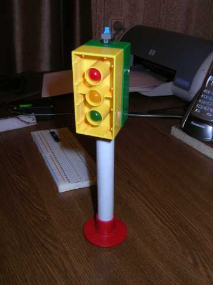
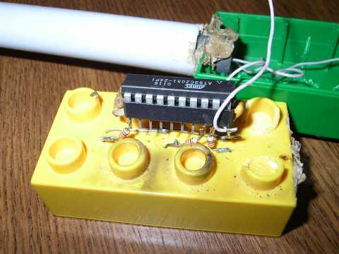
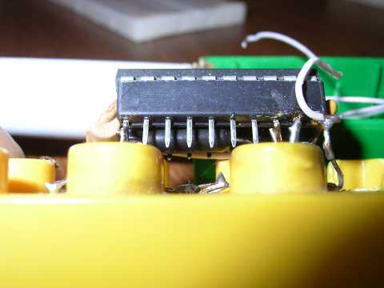
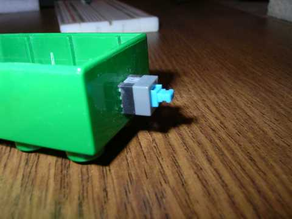

Я сделал этот светофор для своего сынишки, он сидел рядом и деятельно помогал. Получилось замечательное общение, и полезная игрушка. Так сказать, «конструкция выходного дня».
Вот он, светофор:

В качестве корпуса использованы 2 кирпичика от детского конструктора, у них как раз 3 цилиндрических углубления, идеально подошедших под светодиоды диаметром 10мм.
Ножка сделана из куска металлопластиковой трубы, внутри - 2 аккумулятора ААА.
Основание - не помню из чего.
Схему не рисовал, незачем. Процессор - AT89C2051 от Атмел. Кварц маленький на 4 МГц. На 3х ногах - 3 светодиода через резисторы к плюсу питания. Цепь сброса отсутствует, конденсаторы на кварце - тоже.
Плату делать я не стал, припаял всё к кроватке. Вот здесь видны резисторы:

Вот здесь виден кварц (под кроваткой):

Вот кнопка:

Программа на Си, использовался компилятор Keil:
© AHTOXA, 2006.